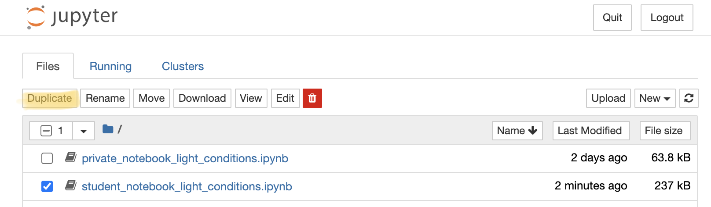

Reusable analysis
Last updated on 2025-01-27 | Edit this page
Estimated time: 90 minutes
Overview
Questions
- How keep track of your data analysis procedure?
- How to make reproducible plots?
- What are Jupyter notebooks
Objectives
- Recognise benefits of notebooks for analysis
- Use a jupyter notebook and modify it
- Understand notebooks role in being FAIR
Reusable Analysis
(~50 min teaching)
Data analysis and research are an iterative process. Experimental measurements and their analysis will guide next steps within research, e.g. identification of new targets for drug discovery, the invalidation of a target would likely make us switch to a different target for target validation. Or in large data, or omics experiments data is initially explored, analysis method will be adjusted and modified, and so will experimental procedures if adequate results have not been achieved.
This so called ad-hoc analysis will only after several iterations of data exploration, retries, adjustments, and modifications to experimental procedures lead to selection of suitable analysis methods and parameters. One would then conduct statistical validation of results and generate final results and graphs for publications. This process can be difficult to track using conventional methods such as pen + paper and Excel.
Reusable Computing
We have previously discussed electronic lab notebooks and their benefit in being FAIR. If you are working with large datasets, mathematical models, complex visualisations of your data then you might already be frustrated by having to copy and paste your figures into your electronic lab notebook after each iteration of new code (or generation in Excel). You might also have lost track of which code corresponded to which figure and why you changed your code last time.
There is a simple solution to this: Computational notebooks
Computational Notebooks - Jupyter Notebook for FAIR practices
Computational notebooks are essentially laboratory notebooks for scientific computing. Instead of pasting DNA gels alongside lab protocols, researchers embed code, data and text to document their computational methods. A free and popular tool that is being used across disciplines is the Jupyter notebook.
Jupyter Notebooks are interactive web applications which allow you to type and edit lines of code in the programming languages July (Ju), Python (Py), or R, hence it’s name Jupyter, and view the output (e.g. graphs or calculations) immediately. The huge benefit of such notebooks is that source code is mixed with documentation, thus explaining experimental setup, analysis, results of tables and plots throughout.
What you need to do is write the code that will analyse our data, and explain the narrative behind the experiment and interpretation of the results. For data scientists, this format can drive exploration via interactive computing. This is an environment in which users execute code, see what happens, modify and repeat in an iterative process between researcher and data, in an ad-hoc way. As a basic principle Jupyter Notebooks run on a ‘kernel’ which is responsible in execution of the code. Generally this ‘kernel’ can run on your computer or you can use external servers to store and analyse your data.
Notebooks can also be exported as .pdf and .html files which allow easy sharing of outputs, and other tools such as nbviewer, an open-source service that allows users to render their Jupyter notebooks on GitHub in a web browser without having to install the software or any programming libraries.
To show you how easy it is to work with Jupyter Notebooks, we have created an exercise for you where we will work on “real-life” data from an experiment looking at circadian influence on plants following short-day and long-day light exposure. We will create some graphs and test whether there are differences between our genotypes of arabidopsis using the language R as an example.
Testimonial
The example notebook and data files can be found in instructors
folders.
The most recent version are available via a separated github
project:
fair-jupyter
Exercise 1: basics of Jupyter notebooks (5 min)
Navigate to the jupyter server, we will first show you how to duplicate a notebook and save it and how to run the code:
Select the notebook titled ‘student_notebook_light_conditions.ipynb’ as depicted below and click ‘Duplicate’. Confirm with Duplicate when you are asked if you are certain that you want to duplicate the notebook. Figure 1. Duplicate a Jupyter notebook
A copy of the notebook has appeared with the suffix ‘-Copy’ and a number (Figure 2a), select this notebook. Have a look around the notebook and explore its anatomy (Figure 2), you should see experimental details, an image, and code. If you click on separate parts of the notebook you can see that it is divided into individual cells (Figure 2 e-g) which are of varying type (Code, R in this case, or Markdown - Figure 2d). Hashtags are comments within the code and shall help you to interpret what individual bits of code do.
 Figure 2. Anatomy of a Jupyter notebook: (a) depicts the name of the
notebook, (b, c) are toolbars, (c) contains the most commonly used
tools, (d) shows of what type - Markdown, Code etc… - the currently
selected cell is, and (e-g) are examples of cells, where (e) shows the
currently selected cell.
Figure 2. Anatomy of a Jupyter notebook: (a) depicts the name of the
notebook, (b, c) are toolbars, (c) contains the most commonly used
tools, (d) shows of what type - Markdown, Code etc… - the currently
selected cell is, and (e-g) are examples of cells, where (e) shows the
currently selected cell.Change the title of the notebook (a) to your initials e.g. “student_notebook_light_conditions_IB”
To Save the notebook click on the disk symbol in the toolbar (c).
To run the code select the top cell of the notebook (e) - this is likely pre-selected already - and click “Run” in the tool bar (c). The selected cell jumps one cell down (f).
To avoid having to press Run repeatedly until we are at the end of the code (try clicking Run two more times and see what happens), we will show you how to run all the code. In the top tool bar (b) click “Cell” and select “Run All”. (“Cell > Run All”.)
If you have another look at the notebook you can see that a table, graph and outputs of statistical testing have been generated.
If you followed all steps correctly you should have reproduced the
table, a graph and statistical testing. Apart from the pre-filled
markdown text the rendered values of the code should look like this:
 Figure 3. Rendering of
data frame
Figure 3. Rendering of
data frame  Figure 4. Rendering of
plot
Figure 4. Rendering of
plot
Exercise 2: how to add and remove content (3 min)
In your previously saved notebook, we will now show you how to add text and remove cells within your notebook. Additionally we will show you how to change code:
- We want to change the author name to your name: Double click on the cell containing the author name. You can see how the layout of the cell changes into Markdown, and you can simply change the name.
- Press the Run button in the toolbar and the Markdown of the cell will be rendered again and you can see the text shows as previously.
- We now want to add some details about the “light_results.txt” file which is being loaded. To add a cell above the code, click the cell currently above the first lines of code and click the “+” in the toolbar. This creates a cell below selected cell.
- Now add a note about the file which is being loaded and the purpose of the subsequent analysis: e.g. Loading of results following short- and long-day light exposure on arabidopsis, followed by visualisation of differences in chlorophyll/biomas etc… content between genotypes on short-days and long-days. To show the cell as Markdown and not code, make sure “Markdown” is selected in the toolbar.
- To remove a cell, select it and click on the scissors icon in the toolbar (This can be undone under Edit > Undo Delete Cells).
- To change the output of your graph click on the cell containing the code below the “Visualise data” title. We want you to change the colours of the box-plots. You can do this where the comment “# change colour of groups” is written. Either you can use three different HEX codes (a 6-symbol code representing colours from white to black), or colours simply by their name - e.g. dark blue, orange…
- To save the graph under a different name add your initials to the file name under which the image is being saved. Press Run again. Your image should be visible in the overall file hierarchy.
(3 min teaching)
Jupyter Notebooks are easy to use and great for collaborative efforts
Imagine your collaborators have shared this experiment measuring biomas of Arabidopsis with you and you were able to duplicate and follow their entire analysis from start to finish, including interpretation of data. Now you are interested in analysing what biomas look like on long-days. You are in luck!
Because Jupyter Notebooks are so easy to handle you simply need to copy and paste the already existing code your collaborators shared and adapt variables such as short-day to long-day and change the names under which figures are being saved to avoid duplication.
Exercise 3: add another analysis step (10 min including walkthrough)
We have shown you how to manipulate text and code in Jupyter notebooks, now we want you to add data visualisation (a graph) and stats for long- day light condition:
- Add additional cells including
- titles
- edited code to depict graph from long-days and not short-days
- Figure legend
- statistical testing of difference between genotypes on long-days
- interpretation of results of statistical testing.
The following code will result in your new graph:
ggplot(subset(df, light_condition %in% "LD"),
# subset only SD from >>light condition column for plotting
mapping = aes(x = genotype, y = biomas, fill = genotype)) +
# x-axis shows genotype, y-axis shows biomas
geom_boxplot(alpha=0.3) +
labs(title = "Biomas per Genotype on long days",
x = "Genotype", # Title of x-axis
y = "Biomas (g)") + # Title of y-axis
# change colour of groups
scale_fill_manual(values=c("#999999", "#E69F00", "#56B4E9")) +
theme_bw() +
theme(legend.position="none")The following code will result in testing of biomas between genotypes in long-days - we assign a new variable to separate both analysis.
res.aov.LD <- aov(biomas ~ genotype, data = subset(df, light_condition %in% "LD"))
# Summary of the analysis
summary(res.aov.LD)The following code will result in Tukey multiple pairwise-comparison testing.
# conduct Tukey multiple pairwise-comparison
TukeyHSD(res.aov.LD)Easy sharing of your notebook
We have now managed to not only reproduce code, but we were able to add to the analysis and interpretation of overall results. To show your PI and colleagues your results, you want to save the notebook in readable format.
Exercise 4: Sharing of your Jupyter Notebook (5 min)
- Download your Notebook (ensure all code has been run) as .html
- View the documents and think about why it is important to run all code before download (try Cell > All Output > Clear and download your Notebook then and compare)
It is important all code is run before the notebook is downloaded, as during download only the text and graphs are saved that are currently visible in your notebook.
The example notebook is extremely well documented to show the good practices when coding. Without such level of comments and explanations it may not be possible for new-commers to re-use this notebook.
Plotting in R or Python
Plotting in R or Python is often a natural starting point to learn programming and allows to create more professional scientific plots than those available in Excel. Additionally, these plots are easier to recreate, and easier to adjust for specific dimensions and journal formatting guidelines. Using code it is very easy to prepare series of figures that follow the same formatting of all their elements.
Ad-hoc analysis with Jupyter Notebooks
Notebook can document entire ad-hoc analysis. It can capture the
motivations and decisions which lead us to the final results (as the
markdown-cells).
It contains information about the input data uses, the actual parameters
and functions called.
It can include intermediate results, adjustment made.
It captures all the steps that lead to the final result which can be
accompanied with the conclusions.
One thing to keep in mind is that your reusable analysis with Jupyter is only ever as good as your self discipline. Things you want to keep in mind are:
- document the entire decision process and motivations behind it
- document input data
- document parameters and their significance
- decide what data you want to retain and clean - annotate why
- comment your code where necessary
- follow coding good practices (in naming variables, functions, in code formatting)
- Notebook has to be shipped with all file inputs and description of runtime environment
Notebooks are very well suited to:
- orchestrate „short”, step by step operations in R, python, shell (notebooks can use all 3 at the same time)
- capture parameters
- add interpretations
- act as a „flexible” user interface (user can change the runtime parameters in the notebook following the embedded instructions)
However, notebooks should not be used a replacement of integrated development environment (IDE) and writing modularized, split into packages code. They are not suitable to write a long programs, long executable code should be compiled into stand alone modules.
Exercise 5: Accessibility of Jupyter Notebooks (5 min)
On a scale from -2 to 2, how do you feel about the following statements (R is interchangeable with Python), where -2 (strongly disagree), 0 no opinion to +2 strongly agree:
- making graphs for a subset of data is easier in R than in Excel
- it is easier to filter for data in R than in Excel
- it is easier to apply formulas or calculations in R than in Excel
- it is easier to generate a series of plots with similar layout in R than Excel
- it is easier to do large scale data processing in R than in Excel
- using notebooks does not require any programming knowledge
- notebooks give you a better overview of your data processing than Excel
- Jupyter is free, whilst a Microsoft Office (+Excel) suite costs $149.99, this alone is an incentive to use Jupyter notebooks as not all individuals have Microsoft Office supported by their employers
- you need to learn R to do any data processing in notebooks
Pipelines
Computational pipelines differ from ad-hoc analysis like a protocol differs from lab record. Pipelines tend to represent fixed and testes step by step analysis / processing. There is no need for experimentation, but, the processing should be fast and reproducible. Pipelines usually take few configuration parameters and input files. The pipeline computations will be repeated multiple times on different input data and the life-span of a established pipeline can be in months or years.
For that reason the computational pipelines should offer:
- robustness, for example restarting job from the middle of the analysis without a need to recreate the first steps
- support for parallel computing
- easy to maintain, ie change inputs, update dependencies, add new step
- be methodologically sound
- have well specified dependencies
It is typically achieved by using one of the systems for managing computational workflows, like for example:
- Nextflow
- Snakemake
- Galaxy
They all offer well defined:
- ways of defining inputs and parameters
- behaviour, like transition to next stages
- error handling
- restart options
Computing in R and Python
Both languages are flexible and easy to start. They permit quickly achieve the desired effect, have things done with minimal setup and lines of codes. However, because of their flexibility it is easy to pick up bad habits and write code without much understanding of good practices of software engineering.
For the journey into scientific computing we recommend:
- Firstly, learn how to make simple plots, clean/reorganize files and data tables
- Secondly, learn basics of software engineering and good programming practices
- Then start coding advanced analysis and processing, construct pipelines with workflows
One of the pitfalls of R and Python is that their behaviour depends on libraries installed on your machine, not only R o Python libraries but also the system one. It often creates situation in which the code works on one machine but does not work on another.
There are ways of dealing with those issues, for example, for Python,
there is a package management system called Conda. Conda installs, runs,
and updates packages and their dependencies. Conda can switch between
project environments, so each project can have its own set of installed
libraries and their versions.
Conda support many languages (Python, R, Ruby, Lua, Scala, Java,
JavaScript, C, C++, FORTRAN) but it is particularly well suited for
Python.
In our experience, for R renv works better than conda.
As a rule, despite the package managment system used, you should try to keep track of what libraries you installed during your code development and in what versions.
Attribution
Content of this episode was adopted after
For instructors: Advanced teaching
For experienced Notebook users who normally use Python:
- Create your own notebook using Python instead of R, replicate the above code-output
For experienced R users:
- Plot both short- and long-day light conditions as a grouped boxplot
ggplot(df, mapping = aes(x = genotype, y = biomas, fill=light_condition)) +
geom_boxplot() +
labs(title = "Biomas per Genotype",
x = "Genotype",
y = "Biomas (g)",
fill = "Light condition") +
theme_bw() Figure 5. Short- and long-day light
conditions depicted as a grouped boxplot
Figure 5. Short- and long-day light
conditions depicted as a grouped boxplot
Key Points
- Jupyter Notebooks are useful tools to share analysis with non-programmers
- One single document can visualise background, results, formulae/code and metadata
- One single document helps to make your work more understandable, repeatable and shareable